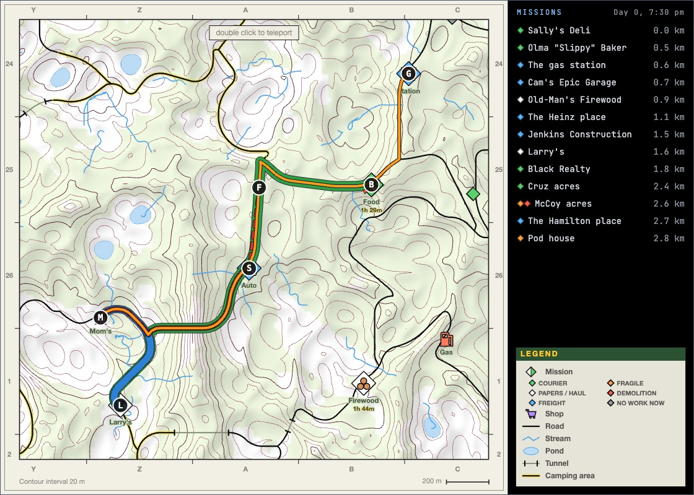
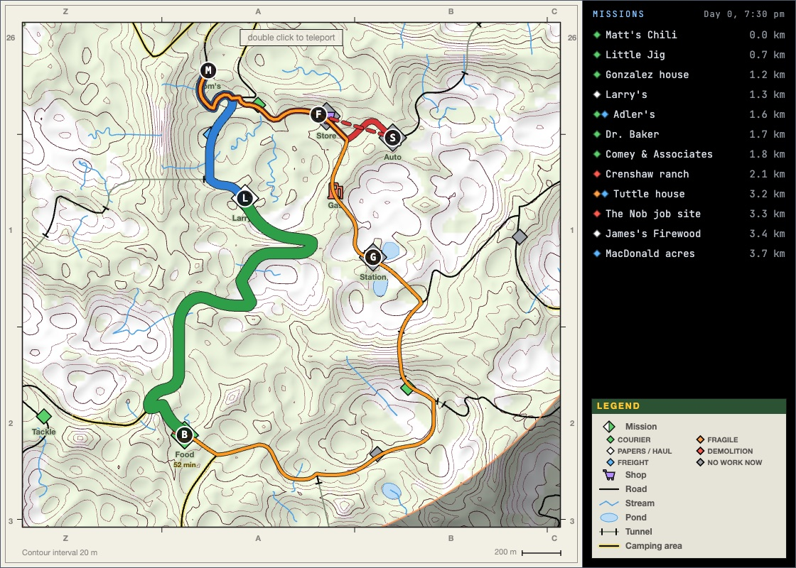
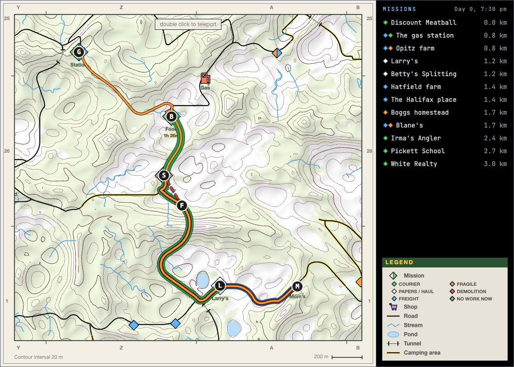
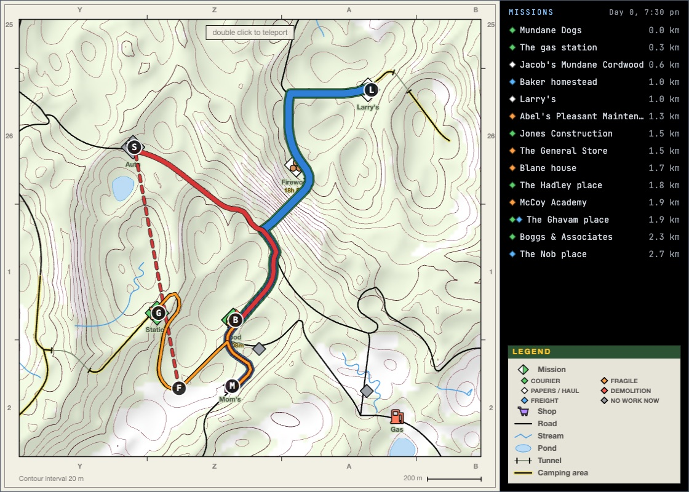

You ruled that the tutorial, and every player's first playthrough, runs on one fixed seed (DEC-149). This page is the shortlist to pick it from. Nothing is pinned until you pick.
I generated 135 random seeds headless and ran the tutorial's legs on each one with the game's own route planner (the same calls the game makes). Every driven leg was then measured: its length, its steepest pitch, how many metres of it are steeper than 15 %, the junctions it passes (a junction here means a node with three or more roads, so a place the driver has to choose), and the tunnels it goes through (a tunnel on two legs counts twice).
Each map is the game's own map of that seed, with the tutorial drawn over it.

One road, every stop on it. The station is a short spur 0.6 km north of the joint. From there the drive home runs back past the joint and west along one road: the flat lands just before the auto shop (a 0.4 km tow), then mom's, with Larry's 0.7 km further on. The morning drives the same road back. The gentlest roads in the census by far: the steepest pitch is 16.8 %, and only 155 m of the whole tutorial is steeper than 15 % (every other candidate has 600–1400 m). The catch: the player sees one road twice, and a 250 m tunnel between the shop and mom's is driven three times (evening, night, and back to the joint; its tick marks hide under the drawn route).
| Leg | When | km | Steepest % | m over 15 % | Junctions | Tunnels driven |
|---|---|---|---|---|---|---|
| Burger joint → gas station | evening | 0.60 | 14.5 | 0 | 1 | 0 |
| Gas station → mom's (the flat halfway) | evening | 2.60 | 15.7 | 45 | 3 | 1 |
| Auto shop → mom's | night | 0.94 | 15.7 | 45 | 1 | 1 |
| Mom's → Larry's (the casserole) | morning | 0.70 | 16.8 | 10 | 1 | 0 |
| Larry's → burger joint (the paycheck) | morning | 2.13 | 16.8 | 55 | 2 | 1 |
| Driven in all | 7.0 | 16.8 | 155 | 8 | 3 |
The station's detour over driving straight home: 1.19 km. The tow, the flat to the shop: 0.38 km (not driven).

A loop. The evening goes the long way round, east via the station (2.6 + 1.8 km); the morning comes back the short way west, mom's → Larry's → the joint. So the player drives two different roads and comes home by a new one. A general store sits right where the flat lands; the shop is a 0.4 km tow. Longer than the others (9.2 km), 1040 m steeper than 15 %, one tunnel on the evening's southern road, and the evening passes close to the region's edge (the shaded corner, bottom right).
| Leg | When | km | Steepest % | m over 15 % | Junctions | Tunnels driven |
|---|---|---|---|---|---|---|
| Burger joint → gas station | evening | 2.63 | 24 | 215 | 1 | 1 |
| Gas station → mom's (the flat halfway) | evening | 1.82 | 24 | 160 | 3 | 0 |
| Auto shop → mom's | night | 1.40 | 24 | 145 | 3 | 0 |
| Mom's → Larry's (the casserole) | morning | 1.05 | 24 | 125 | 2 | 0 |
| Larry's → burger joint (the paycheck) | morning | 2.32 | 25.1 | 395 | 1 | 0 |
| Driven in all | 9.2 | 25.1 | 1040 | 10 | 1 |
The station's detour over driving straight home: 1.08 km. The tow, the flat to the shop: 0.40 km (not driven).

A line. Every place sits on one road: the station at its north end, then the joint, the shop, the flat, Larry's, mom's. The station is 0.9 km the wrong way, so the evening drives out and back past the joint (a 1.8 km detour, the most of the four). The flat lands next to the shop (a 0.2 km tow), and Larry's is between the shop and mom's, so the morning's casserole is only 0.6 km. 1385 m steeper than 15 % and one tunnel, driven three times.
| Leg | When | km | Steepest % | m over 15 % | Junctions | Tunnels driven |
|---|---|---|---|---|---|---|
| Burger joint → gas station | evening | 0.90 | 25.1 | 220 | 1 | 0 |
| Gas station → mom's (the flat halfway) | evening | 3.24 | 25.1 | 535 | 3 | 1 |
| Auto shop → mom's | night | 1.91 | 23.9 | 315 | 2 | 1 |
| Mom's → Larry's (the casserole) | morning | 0.59 | 22.6 | 95 | 0 | 0 |
| Larry's → burger joint (the paycheck) | morning | 1.75 | 23.9 | 220 | 2 | 1 |
| Driven in all | 8.4 | 25.1 | 1385 | 8 | 3 |
The station's detour over driving straight home: 1.79 km. The tow, the flat to the shop: 0.23 km (not driven).

The most compact. Everything sits within about 1.5 km of the joint, and it is the shortest tutorial of the four (6.1 km driven). The flat lands between the station and mom's, but the shop is off to the north-west, so the tow runs 0.9 km away from home and the night drive comes back 1.3 km. The catch: the steepest pitch on the shortlist (29.2 %), and 12 junctions to choose at. One tunnel near Larry's, driven twice.
| Leg | When | km | Steepest % | m over 15 % | Junctions | Tunnels driven |
|---|---|---|---|---|---|---|
| Burger joint → gas station | evening | 0.86 | 17 | 60 | 1 | 0 |
| Gas station → mom's (the flat halfway) | evening | 1.00 | 17 | 60 | 1 | 0 |
| Auto shop → mom's | night | 1.30 | 29.2 | 290 | 3 | 0 |
| Mom's → Larry's (the casserole) | morning | 1.62 | 29.2 | 90 | 4 | 1 |
| Larry's → burger joint (the paycheck) | morning | 1.30 | 29.2 | 90 | 3 | 1 |
| Driven in all | 6.1 | 29.2 | 590 | 12 | 2 |
The station's detour over driving straight home: 1.54 km. The tow, the flat to the shop: 0.90 km (not driven).
My recommendation: 822480141. For a first drive it is the gentlest road in the census by a wide margin, every stop is on one road you cannot get lost on, and the whole tutorial is 7 km of driving. If you would rather the player saw more of the world, 3037637875's loop is the pick. A census note: 300 seeds were planned; the run was paused at 135 to keep the machine free for main's smoke. 43 of those 135 passed, which is plenty to choose from; I can run the rest if you want a wider pool.
Whichever you pick, a gate then pins its beats (every place where it should be, every leg within its distance), and any change to world generation that moves them fails that gate. Then a new seed has to be picked, from a fresh run of this census.
Anything about the tutorial's world these maps should have shown, or a place you want closer.